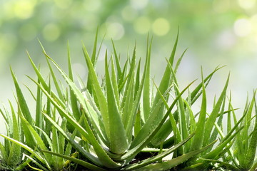
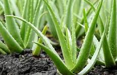

Common names
Aloe vera, Medicinal aloe, Gwarpatha, Ghritkumari, Kumari, Sotru katra, Lolisara, Korphad
Habitat
Neem is widely distributed across tropical and subtropical regions, particularly in:
- India: Aloe Vera is cultivated in various parts of India, particularly in Rajasthan, Gujarat, Maharashtra, and Tamil Nadu.
- Other Regions: Aloe Vera is widely grown in Africa, the Mediterranean region, Australia, the southern United States, and parts of Central and South America.



Medicinal Uses
Aloe Vera has a wide range of medicinal uses due to its therapeutic properties:
- Skin Care: Aloe Vera gel is widely used to treat skin conditions such as burns, cuts, wounds, sunburns, and insect bites. It has cooling and soothing properties that help reduce inflammation and promote healing. It is also used to treat acne, eczema, and psoriasis.
- Digestive Health: Aloe Vera juice is used to treat digestive issues such as constipation, acidity, and irritable bowel syndrome (IBS). It has mild laxative properties and helps in detoxifying the digestive system
- Anti-inflammatory and Antioxidant: Aloe Vera contains compounds that reduce inflammation in the body and help fight oxidative stress. It is used to alleviate pain associated with conditions like arthritis
- Immune Support: Aloe Vera is believed to boost the immune system by promoting the production of white blood cells and improving the body’s defense mechanisms
- Oral Health: Aloe Vera is used in mouthwashes and toothpastes to improve oral hygiene and treat gum diseases like gingivitis.
- Hair Care: Aloe Vera is used in hair care products to promote hair growth, reduce dandruff, and maintain scalp health.
Methods of Cultivation
- Climate and Soil Requirements: Aloe Vera is a hardy plant that grows well in warm, dry climates. It prefers temperatures between 20°C to 30°C and can tolerate heat and drought. Aloe Vera grows best in well-drained, sandy loam soil with a pH between 6.0 and 8.0. It is important to avoid waterlogged soil, as excess moisture can lead to root rot
- Propagation: Aloe Vera is typically propagated through offshoots or "pups" that grow from the base of the mother plant. These offshoots are carefully separated and planted in new soil. Aloe Vera can also be grown from seeds, but this method is slower and less common
- Planting: Aloe Vera should be planted in raised beds or pots with well-drained soil. The plants should be spaced about 60 cm apart to allow sufficient room for growth. The best time to plant Aloe Vera is during the spring or early summer when the temperature is warm.
- Watering: Aloe Vera is a drought-resistant plant and requires minimal watering. It should be watered sparingly, only when the soil is completely dry. Overwatering can cause the roots to rot, so it is important to ensure that the soil has good drainage.
- Pruning: Aloe Vera does not require regular pruning. However, dead or damaged leaves should be removed to improve the plant's appearance and encourage new growth.
- Pest Control: Aloe Vera is relatively resistant to pests and diseases. However, it can be affected by aphids, mealybugs, and fungal infections in overly humid conditions. Using organic insecticides or neem oil can help manage pests. Proper drainage and avoiding overwatering can prevent fungal infections.
- Harvesting: Aloe Vera leaves can be harvested as needed throughout the year. The outermost leaves, which are the most mature, should be cut close to the base of the plant. Care should be taken to avoid damaging the central stem. The harvested leaves can be used fresh or processed to extract the gel, which is then used for various medicinal and cosmetic purposes.